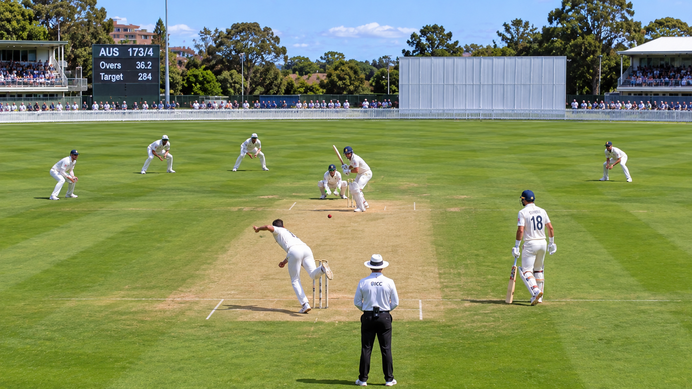

What is Cricket?
Cricket is a bat-and-ball game that is played between two teams of eleven players on a circular field with wickets/stumps at each end. Two players from one of the teams will bat first with one being the striker and one being the non-striker. They will stand in front of the stumps and will try to hit the ball as fast and far as they can so they can get runs. You get runs by running to the white line at the other end of the pitch and back. If the ball reaches the boundary rope but touches the ground before, then it's a 4 or 4 runs. If it does the same but it goes into the stands without touching the ground then it's a six or six runs. The more runs you get the better.
The fielding team have to try and get the batters out by catching the ball or knocking over the stumps. If the batter doesn't get to the white line on the other side of the pitch before the stumps are hit with the ball, then the batsman is out. Once all the batsmen are out everyone goes for a break. A period of time doing this is called an innings. If a bowler oversteps the white line that they're bowling from, it's an illegal bowl, and the batters get a free run or runs depending on how well they hit the ball. There is an umpire who stands behind the bowler to monitor the game. The umpire uses hand signals to determine if a boundary or wicket is scored. There are three forms of cricket: Test matches, One Day Internationals (ODIs), and Twenty20 (T20).
This cricket website is a member and proud partner with New Zealand Cricket and The International Cricket Council
